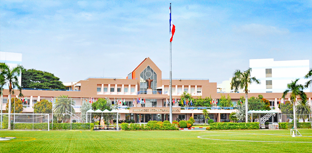

루암루디 인터내셔널 스쿨 본관과 운동장 · 사진: RuamrudeeBKK / Wikimedia Commons, CC BY-SA 3.0
루암루디 인터내셔널 스쿨(Ruamrudee International School) — 방콕 동쪽 민부리의 가톨릭 학교, 미국식 졸업장 위에 IB와 AP
· 이 글은 민부리 본교를 기준으로 씁니다.
· 루암루디 이름을 쓰는 캠퍼스는 유아 캠퍼스, 방콕 서북쪽 논타부리의 랏차프록(Ratchapruek) 캠퍼스, 푸껫 캠퍼스 등이 함께 소개됩니다. 받는 학년과 개설 과정이 다를 수 있습니다.
· 약칭 RIS는 다른 학교도 씁니다. 검색할 때는 "Ruamrudee" 또는 "루암루디"를 그대로 넣으세요.
1. 어떤 학교인가 — 1957년, 성당에서 시작한 학교
루암루디 인터내셔널 스쿨(Ruamrudee International School, 이하 루암루디)은 1957년, 방콕 홀리 리디머 성당의 레뎀토리스트회 신부들이 세운 것으로 알려져 있습니다. 그래서 지금도 가톨릭 학교로 소개되며, 매달 정기 미사와 중고등 과정의 종교 수업이 안내돼 있습니다. 방콕 국제학교 가운데 오래된 축에 드는 학교입니다.
본교는 방콕 동쪽 민부리(Min Buri) 구, 람캄행 184 일대에 있습니다. 위 사진이 그 본관과 운동장입니다. 받는 학년은 유아 과정부터 12학년까지이고, 교육과정은 미국식 대학 준비 과정입니다. 인증은 WASC로 안내되고, CIS·EARCOS 회원교로 소개됩니다. 도서관도 초등(유아~5학년)과 중고등(6~12학년)이 따로 운영될 만큼 초등부와 중고등부가 나뉜 구조입니다. (학생 수·학비처럼 해마다 바뀌는 수치는 자료마다 달라 적지 않습니다. 학교 요강을 직접 확인하세요.)
2. 핵심 — 졸업장은 하나, 마지막 2년은 갈래가 둘
루암루디를 이해하는 가장 쉬운 방법은 "바탕은 미국식, 위에 얹는 것을 고른다"입니다. 모든 졸업생이 받는 것은 미국식 고교 졸업장이고, 그 위에 IB 디플로마를 얹거나 AP 과목을 듣는 방식으로 마지막 2년이 갈립니다. IB 공식 학교 명부에는 본교의 디플로마 과정이 1998년에 인가된 것으로 나옵니다.
| 비교 | IB 디플로마를 얹는 길 | AP 과목을 듣는 길 |
|---|---|---|
| 짜는 방식 | 정해진 6과목 + 핵심 요소(소논문·TOK·CAS)를 2년 묶음으로 | 졸업 요건 위에 원하는 과목을 골라서 |
| 평가 | 내부 평가(과제) + 마지막 해 외부 시험 | 과목별 5월 AP 시험 + 학교 내신 |
| 부담이 몰리는 곳 | 글쓰기와 마감 관리, 2년 내내 | 시험 직전, 과목 수만큼 |
| 잘 맞는 학생 | 여러 과목을 고르게, 장기 과제에 강한 학생 | 강한 과목이 뚜렷하고 시험형에 강한 학생 |
| 결정 시점 | 10학년 과목 신청 때. 11학년이 시작되면 바꾸기 어렵습니다 | |
여기서 오해 하나만 짚겠습니다. "AP 쪽은 IB보다 쉬운 길"이 아닙니다. 과목을 스스로 골라야 하니 오히려 무엇을 몇 개 들을지를 가정이 설계해야 합니다. 반대로 IB는 틀이 정해져 있는 대신 2년 내내 마감이 이어집니다. 어느 쪽이 맞는지는 아이의 강점과 진학 방향으로 정하셔야 합니다(→ AP 과목 선택·IB 점수 구조·과목 신청).
방콕에서 같은 "미국식 + AP·IB" 구조를 가진 학교로는 ISB 방콕이 있습니다. 두 학교의 차이는 커리큘럼보다 위치와 학교 성격에서 납니다. ISB는 1951년 문을 연 것으로 알려진 학교로 논타부리 쪽 니차다 타니 커뮤니티에 있고, 루암루디는 방콕 동쪽 민부리에 있는 가톨릭 학교입니다. 방콕의 다른 학교들은 방콕 지역 글에 모아 두었습니다.
3. 한국(주재원) 학생이 겪는 어려움 — 위치와 캠퍼스부터
첫째, 생활권이 방콕 중심과 다릅니다. 주재원 가정이 많이 사는 수쿰빗 중심가와 민부리는 거리가 있습니다. 방콕은 같은 거리라도 시간대에 따라 이동 시간이 크게 달라지는 도시라, 집을 먼저 구하고 학교를 고르면 통학이 하루의 큰 부분을 차지할 수 있습니다. 순서는 학교 → 통학 버스 노선 → 집입니다(→ 통학·스쿨버스).
둘째, 어느 캠퍼스 정보인지 섞입니다. 루암루디 이름을 쓰는 캠퍼스가 여러 곳이라, 한국어 후기나 유학원 글에 나온 학년·과정·위치가 본교 얘기가 아닐 수 있습니다. 특히 논타부리의 랏차프록 캠퍼스는 비교적 최근에 생긴 곳으로 소개되며, IB 공식 명부에도 본교와 별도의 학교로 올라 있습니다. 지원하실 때는 캠퍼스 이름을 정확히 적어 문의하세요.
셋째, 미국식 내신의 "작은 점수"입니다. 미국식 학교의 성적은 시험 한 번이 아니라 숙제·퀴즈·프로젝트·참여가 비중대로 쌓입니다. 한국에서 온 학생은 큰 시험에는 강한데, 작은 과제를 놓쳐서 학기 성적이 깎이는 경우가 많습니다. 학교 플랫폼에서 과목별 비중표를 먼저 확인하세요(→ 학습 플랫폼 읽는 법·숙제·과제 관리).
4. 그래서 이렇게 준비합니다 — 학년별로
- 초등(유아~5학년) — 영어 읽기의 기준선을 만들고, 수학은 영어 용어(fraction·place value 등)를 먼저 익힙니다. 첫 해 리딩 숫자가 낮은 것은 정상입니다(→ 리딩 레벨).
- 중학(6~8학년) — 미국식 수학 진도(Pre-Algebra → Algebra)에서 배치가 갈립니다. 입학 시 수학 반 배치를 어떻게 하는지 물어보세요. 영어는 문단 쓰기가 핵심입니다.
- 고등(9~12학년) — 9학년부터 졸업 학점이 쌓입니다. 10학년 과목 신청에서 IB 디플로마로 갈지, AP 중심으로 갈지 정합니다. 이 결정 전에 아이의 강한 과목과 진학 방향을 한 장에 정리해 두세요.
5. 방콕이라는 조건 — 화상과외의 강점
태국은 한국보다 2시간 늦습니다. 한국 저녁 8시가 방콕 저녁 6시입니다. 아이가 하교하고 저녁을 먹은 뒤의 시간이 한국 선생님의 저녁 수업 시간과 그대로 겹칩니다. 특히 민부리처럼 시내 중심과 거리가 있는 곳에 사시면, 학원을 오가는 시간 자체가 부담이 됩니다. 화상수업은 그 이동이 없습니다. 저희는 학교 과제와 채점 기준을 함께 여는 방식으로 수업합니다. 미국식 학교에서는 아이가 어느 과제에서 점수를 잃는지가 성적표보다 과제에서 먼저 보이기 때문입니다.
관련 검색어: 루암루디국제학교 · 루암루디인터내셔널스쿨 · 방콕국제학교수학과외 · 방콕국제학교영어과외 · 민부리국제학교
정리
루암루디 인터내셔널 스쿨은 1957년 레뎀토리스트회 신부들이 세운 것으로 알려진 방콕 동쪽 민부리의 가톨릭 국제학교이고, 유아~12학년 미국식 대학 준비 과정 위에 IB 디플로마(1998년 인가) 또는 AP를 얹는 구조입니다. 이 글에서 꼭 가져가실 것은 두 가지입니다. "마지막 2년의 갈래는 10학년 과목 신청 때 정해진다", 그리고 "같은 이름의 캠퍼스가 여러 곳이라 어느 캠퍼스 정보인지부터 가려야 한다". 아이의 지금 위치가 궁금하시면 30분 무료 수업으로 먼저 확인해 보세요. (개설 과정·캠퍼스 구성·입학 일정은 바뀔 수 있으니 반드시 학교 요강을 직접 확인하세요.)